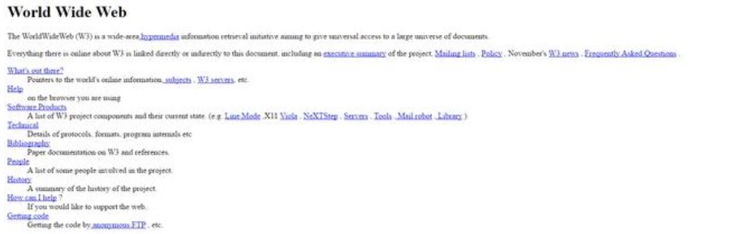
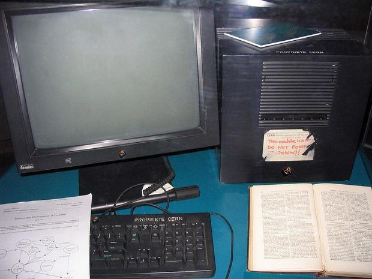
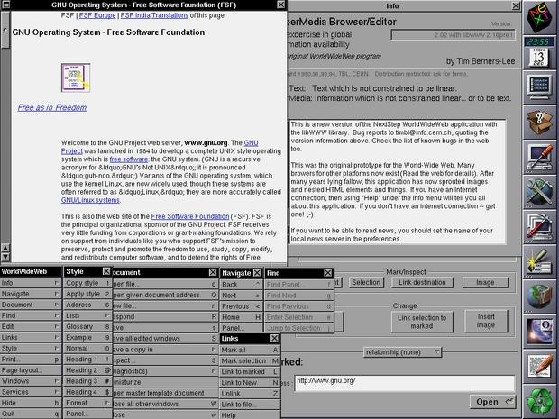
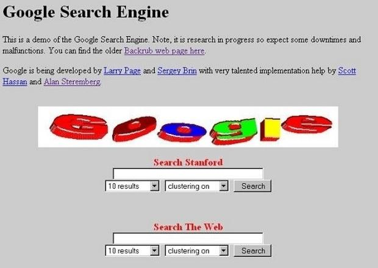

Esta pagina fue desarrollada de acuerdo a los requerimientos plateados en la unidad 2, fase 3, a continuación encontrara los sigientes temas y algo de historia sobre la evolución de las paginas Web
El 23 de agosto de 1991 se abrió al público la primera página web de la historia. Han pasado 25 años en los que, literalmente, Internet ha cambiado el mundo. Estos son sus orígenes. Para los millennials y los nativos digitales resulta impensable un mundo sin Internet, pero lo cierto es que la Gran Red apenas lleva 25 años entre nosotros. Su origen se remonta a 1969, cuando el Departamento de Defensa de los Estados Unidos desarrolló una red que conectaba varias universidades californianas, llamada ARPANET.
Al principio la comunicación entre ordenadores era muy básica, sólo se intercambiaban mensajes o se ofrecía un acceso directo a los ficheros similar a cómo hoy accedemos a otro equipo a través de FTP. Los informáticos se dieron cuenta de que era necesario un nuevo sistema de comunicación que permitiese mostrar información de forma intuitiva, para que todo el mundo pudiese acceder a ella.
Tim Berners-Lee, un científico inglés que trabajaba en el CERN, la Organización Europea para la Investigación Nuclear, con sede en Suiza, inventó un protocolo de comunicación basado en hipertexto (enlaces dentro de palabras), que permitía crear páginas con texto e imágenes que se enlazaban entre sí. Lo llamó World Wide Web (WWW). Esta es la primera página web de la historia:
Tim Berners-Lee comenzó a trabajar en el proyecto en 1989 y fue el inventor, junto con su equipo, del protocolo HTTP, del sistema de direcciones web URL, y del lenguaje HTML, que hoy en día se consideran el ADN de las páginas web.
La primera web se creó el 6 de agosto de 1991, pero no se abrió a todo el mundo hasta el 23 de agosto de 1991. Por tanto, hoy se cumplen 25 años de la publicación de la primera página web.
Este fue el primer servidor de páginas web que existió, donde se alojó la primera página, mantenido por el propio Tim Berners-Lee:
Aún puede verse la pegatina con la advertencia: "DO NOT POWER IT DOWN!!" (¡No lo apagues!). Y es que si alguien hubiese apagado ese ordenador se habría cargado la World Wide Web, literalmente...
El nuevo sistema basado en hipertextos gustó a los expertos, pero aún quedaba mucho por hacer. Lo más inmediato era crear un aplicación que permitiera acceder a esas recién creadas páginas web. Hacía falta un browser o navegador. El primero de todos se llamaba, como no, WorldWideWeb, y fue creado por el propio Tim Berners-Lee en 1991, pero sólo funcionaba en ordenadores NeXT:
Pronto llegaron otros buscadores famosos como Infoseek, Excite, AltaVista, Lycos y Yahoo! El buscador de Google apareció en 1997, y desde entonces se ha convertido en el más popular. Actualmente recibe 3000 millones de búsquedas todos los días. Se calcula que existen más de 1000 millones de páginas web activas.
Esta es la primera versión del buscador de Google. Ese logo hace daño a los ojos...:
